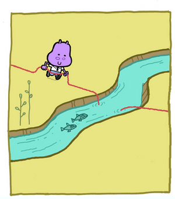
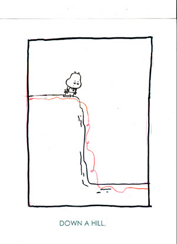

It started with a Hippo!

Before I truely get started on this project I have to finish up the project that I am currently on. I have about a week and a half left as Producer/Art Director on the Nickelodeon shows The Fairly OddParents and Danny Phantom. About the only thing that I have been able to do on Wubby, Widget, and Walden is interview some writers and work out potential premises for the first script.
So in the meantime I thought that I should fill you in on how this whole thing came to be.
Lets start at the begining.
It was over 2 years ago when Fred Seibert (exec. producer of The Fairly OddParents, My Life As A Teenage Robot, Chalkzone ect...) came to the Nickelodeon Animation Studio and announced that he was going to publish 50 childrens books and that one of those books was going to be made into a Nick Jr. television show. He would start taking pitches immediately.
My eyes lit up! How many times does someone knock on your door and say "Hey, do you have any ideas for a childrens book?"
Fred specifically went out to animation artists because most of us LOVE childrens books. But as much as we all have dreamed of creating our own childrens books, not to many of us have fully realized book ideas just sitting in our drawers. Well at least I didn't.
My sketch books were filled with doodles and 1/2 thoughts but no ideas for books.
One weekend morning I went for a run and was looking up at the power lines above my head. For some reason I've always found power lines to be really fascinating. I started thinking about where the power lines ended.
And that made me think about how a kid might wonder the same thing and want to follow the power lines to the end to see what is there.
And that made me think maybe it's not a power line it's a string. And maybe it's not a kid it's an animal.
That all led to me coming up with a book called HUGO. It's about a happy hippo named Hugo who follows a very long red string thinking that he will find something special at the end. It turns out that there was nothing special at the end of the string but he makes lots of new friends along the way.
I had the idea now all I had to do was rough out a 64 page book. Eric Homan ,who has been handling this book project for Fred here in LA, told me that I didn't need to do a lot of drawings for the initial proposal but I felt like I should present a completely realized version of the book. I mean the text of the book was as simple as "Hugo followed the string down the hill." With out a drawing I didn't know quite how well that would read.
{kind=link}

So after spending many a lunch hour eating a Chinese chicken salad at Frank's (the diner across the street from Nickelodeon), I finally had a rough version of the book! After a lot of editing, cutting, pasting, and a trip to Kinkos for some velobinding, I nervously gave the book to Eric. I had no idea if it was good or bad. Was it wonderfully simplistic or was it just simple minded? I didn't know. I had been alone on an island with it for a long time and the only other person to see it was my girlfriend Teri. She is a very tough critic who has no problem telling me when she doesn't like something. She really liked it but... you never know.
So, what did Eric think? Would it get passed on to Fred?
Well this seems like a good time for a cliff hanger. If you are interested in what happens next, tune in for the next post.
{kind=link}
Ab Fab Baby!
Love Kookla
Posted by: Kookla | February 16, 2005 at 11:22 PM
Congratulations on your show!
Are you going to get your favorite band to do the theme song like Higglytown Heroes has They Might Be Giants?
Have Fun!
Posted by: kookla | February 20, 2005 at 08:46 AM
I see you have David Byrne on your links,are you going to ask him to do your theme song?
Posted by: kookla | February 20, 2005 at 08:51 AM
Thanks checking out the blog!
I would love to have They Might Be Giants and/or David Byrne do songs and music.
They Might Be Giants could do the music and David Byrne could play Walden.
Posted by: bob | February 21, 2005 at 10:06 AM
Was this book ever for sale publicly or were they only made for a pitch? I really like the story concept and fresh/simple artwork.
Posted by: Marmax | February 23, 2005 at 08:16 PM
It will be published by Random House but I'm really not sure when.
Once I know, you will know!
Bob
Posted by: bob | February 23, 2005 at 10:33 PM